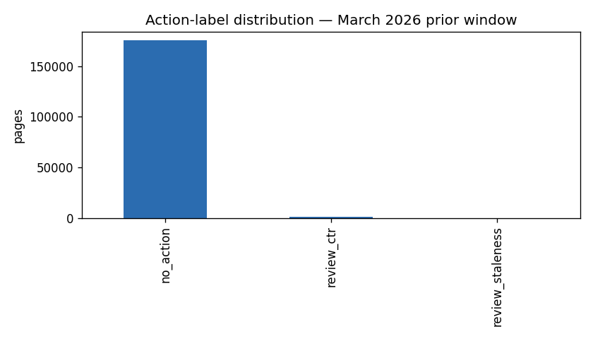
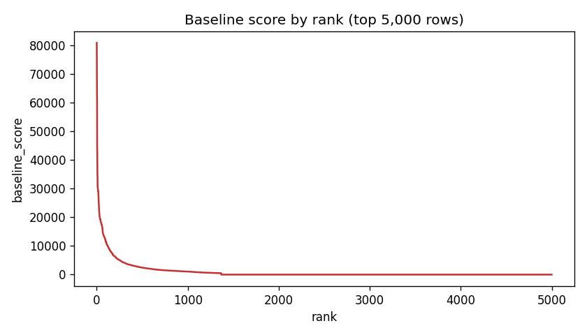

Which pages should a content team review first?
A ranked queue built on 176,738 pages
Content teams with thousands of visible pages cannot review them all, so the real decision is which pages to open first. I built a ranked review queue on 176,738 pages from FlyRank's production search warehouse, using a 30-day prior window (March 2026) as features and a two-month future window (April–May 2026) to define an observed decline label. A hand-written rule scored pages by visibility × CTR-below-tier-median × impressions, and I compared it against a logistic regression and a depth-3 decision tree on the same grouped client split. The hand rule won at the top of the queue (Precision@50 = 0.52 vs 0.26 for logistic regression), while the model's top ranks were dominated by low-impression noise. The output is a ranked, reason-coded action queue a content editor can run in a weekly review meeting plus a documented negative result showing where a learned model fails on this slice.
1. Introduction
A portfolio of visible content has a triage problem. In the March 2026 slice used here, 176,738 pages had at least one GSC impression; a team reviewing 50 pages per week would need more than sixty years to look at all of them once. The useful question is not "which pages are declining" 28.3% of them are but "which of these should a human open first?"
This paper answers that question with a ranked queue. The queue is a decision-support tool: it produces an ordered list of pages with a reason code and an action label, so a content editor can spend their first hour of the week on the pages most likely to repay attention.
This is the content problem FlyRank works on. FlyRank builds content as infrastructure: it researches, writes, and publishes into client sites, then watches search data to decide what to fix next. The product already flags pages with hand-written rules: health scores, quick-win tags, needs-attention flags and those rules work in production. But rules run out where signals get many, tangled, and shifting. This paper asks whether a learned model beats the hand-written rule on the ranking problem the product already solves by hand and reports what happens when it doesn't.
2. Data
Release. FlyRank ML Internship warehouse
(FlyRank/internship-warehouse, build v20260703), a Hugging Face gated release
that mirrors FlyRank's production search stack. Public-safe: no client names, URLs, or raw
queries appear anywhere in this repo or this page.
Tables used.
fact_content_daily_performance/month=2026-03daily per-page performance for the prior (feature) window.fact_content_daily_performance/month=2026-04andmonth=2026-05the future window, used only to compute the evaluation label.dim_contentstatic page attributes (content_type,main_intent,word_count,content_updated_date).
Date windows.
- Prior (feature) window: 2026-03-01 → 2026-03-31.
- Future (label) window: 2026-04-01 → 2026-05-31.
- The final month (
month=2026-06) is sealed and never touched.
Excluded fields and rows.
trend_direction,trend_pctstarter-CSV only; label sources.is_declining_future,imp_mar,imp_apr_maythe label and its inputs.content_hash_id,client_hash_idpseudonyms; used for grouping and joining only, never as features.ga4_*whenga4_data_available = FALSEzeros are fill, not measured engagement.is_published,is_deleted,provider_used,model_usedproduct-decision metadata.- All rows from
month=2026-06reserved as a sealed test month.
Grain check. One row of the fact table = one page-day
(report_date, client_hash_id, content_hash_id). Verified with a
GROUP BY ... HAVING COUNT(*) > 1 probe that returned zero rows.
3. Methodology
Baseline (frozen)
A hand-written rule, readable on purpose:
score = visible × low_ctr × impressions_30d
where visible = impressions_30d ≥ 500, and
low_ctr = ctr_30d < tier median (tier = position bucket: top_3, page_1,
page_2, page_3_5, deep). Reason codes: visible_lowctr, stale_visible,
stale_only, not_flagged. Action labels: review_ctr,
review_staleness, review_intent, no_action.
Model
Logistic Regression on five raw prior-window signals:
impressions_30d, clicks_30d, ctr_30d,
avg_position_30d, days_since_update. Secondary: a depth-3
decision tree. Gradient boosting and random forest were not tried, the logistic regression
already loses to the baseline, so adding complexity would not be honest.
Label
is_declining_future = 1 when the April–May impression sum is below 80% of the
March impression sum. Observed, not defined by a rule.
Validation
GroupShuffleSplit by client_hash_id, test_size=0.2,
random_state=42. Zero client overlap between train and test verified.
This is the honest axis: a random split would let the model memorize client-specific patterns
and inflate its score.
Leakage checks
- Feature list and label sources audited programmatically — disjoint.
- Train-without test on
clicks_30d: P@50 unchanged, but coefficient magnitude and top-of-list behavior disagree (see Results). - Deliberate leak: adding
imp_apr_mayas a feature jumps P@50 from 0.26 to 1.00, the harness catches the leak, and it is deleted. The honest number is kept.
4. Results
Both baseline and models were evaluated on the same grouped test set with the same metric. Test-set base rate: 0.186. Train base rate: 0.310.
| Model | P@20 | P@50 | P@100 | AUC |
|---|---|---|---|---|
| Random ranking | 0.15 | 0.22 | 0.16 | 0.4976 |
| Week-4 hand rule (baseline) | 0.45 | 0.52 | 0.45 | 0.5088 |
| Logistic Regression | 0.25 | 0.26 | 0.36 | 0.5605 |
| Decision Tree (depth 3) | 0.25 | 0.20 | 0.15 | 0.5611 |
Reading. The hand rule wins at Precision@20 and Precision@50, the top of the queue, where a human actually acts. Logistic regression has a slightly better AUC, meaning it discriminates across the whole test set better, but its top-of-queue quality is worse because it ranks low-impression noise first. The decision tree collapses at P@50.

no_action; 1,368 pages carry review_ctr
(visible but underperforming their position tier), 6 carry review_staleness.
The queue is deliberately narrow at the top and the rule trades coverage for precision.

Error analysis
The top-50 false positives from logistic regression have a median of 3 impressions and a mean of 5,659 dominated by effectively-zero-traffic pages, with a handful of giants pulling the mean up. The model has learned "no clicks → likely decline," which is trivially true and useless as a review queue. The 51–200 rank bucket declines at 47.3%, well above the base rate: the model has signal, it just ranks it too low.
5. Limitations & honest framing
- decision-support This is decision-support, not causal. The label is observed, but the analysis is cross-sectional. No claim that "fixing CTR causes recovery" is supported.
- observed One month, one portfolio. March 2026 prior window, April–May 2026 label, 47 clients in the modeling frame. Results may not generalize.
- measured Grouped by client, not by time. Features come from one window and labels from a later window, so the temporal axis is already honest. The generalization axis tested here is "unseen clients," not "unseen future months."
- directional The baseline wins at P@50. LR does not beat the hand rule at the top of the queue on this slice. The model's AUC advantage (0.56 vs 0.51) does not translate into better top-of-queue quality.
- measured Staleness could not be used as a filter.
content_updated_datebehaves like a sync artifact in this release 84.2% of rows have negativedays_since_update. Staleness is retained only as a reason-code booster. - scope Not a security tool. Nothing in this work detects malicious, deceptive, or abusive content. Unusual combinations are surfaced for human review, not as alarms.
6. Ranked recommendations
The action playbook, ordered by what a content team should do first.
-
Rewrite title/meta on the top of the
review_ctrqueue. 1,368 pages flagged. The top row alone has 80,821 impressions at 0.04% CTR, ranking 1.5 a large, cheap-to-test upside. -
Add a minimum-impressions floor to any future model.
LR's top-50 ranks were dominated by 3-impression pages. The baseline's
visible ≥ 500floor is what makes it win at P@50. - Do not deploy the LR as the primary ranker. It loses to the hand rule on the same split at the metric that matters (P@50).
-
Re-audit the CTR-vs-tier interaction explicitly.
The rule captures it as an interaction; LR sees only raw CTR and misses it. A future model
could add
ctr_rel_tier = ctr_30d − tier_median_ctras a feature. -
Hold off on staleness-based filtering until
content_updated_dateis fixed upstream. - Treat the queue as decision-support. No automated edits, no auto-publish. Human review stays in the loop.
7. Reproducibility
Every number on this page traces back to a notebook in work/notebooks. Run order:
- w01_research_question.ipynb research question and lane.
- w02_ml_task_framing.ipynb framing as a ranking/scoring task.
- w03_data_contract.ipynb data contract and verification queries.
- w03_feature_leakage_check.ipynb feature vector and the deliberate-leak experiment.
- w04_signal_audit.ipynb signal audit and flag-linked verdicts.
- w04_baseline_score.ipynb the frozen baseline and ranked queue.
- w05_model.ipynb — logistic regression and decision tree under a grouped split.
- w06_validation_audit.ipynb validation audit and claim rewrite.
- w07_action_playbook.ipynb action playbook, exports, and figures.
- capstone.ipynb this paper's mirror notebook.
Environment. Python 3.13 (Colab), duckdb, pandas, numpy, matplotlib,
scikit-learn. All randomness is seeded (random_state=42 throughout).
Data access is read-only via a Hugging Face READ token stored as a Colab Secret named
HF_TOKEN never committed.
Outputs.
work/outputs/playbook_metrics.json
holds the standing metrics. Figures regenerate on every run of
w07_action_playbook.ipynb and are committed at
docs/figures/.
8. Acknowledgments & data credit
Built on the FlyRank ML Internship dataset. The warehouse release, the internship framework, and the lane guidance all come from FlyRank. Any errors in framing, modeling, or interpretation are my own.